鋼結構設計 ｜ SS-U1-3 梁柱桿件 ｜ 影片講義
梁柱桿件
Beam-Column
一副骨架：兩條腿——左腿需求側、右腿強度側，在 P-M 互制式會合
0開場
梁柱桿件常讓人覺得公式又多又雜：\(B_1\)、\(B_2\)、\(C_m\)、兩條互制式，還有 ASD 的兩條式子。其實它只有一個物理本質，和一副兩條腿的解題骨架。抓住這兩樣，再多公式也不會迷路。
影片分四段：
- 為什麼梁柱的內力會自己長大；
- 搭出兩欄解題法；
- 逐一走過需求側（\(B_1\)、\(B_2\)）和強度側；
- 對照 ASD，整理成考場三步驟。
1內力會自己長大
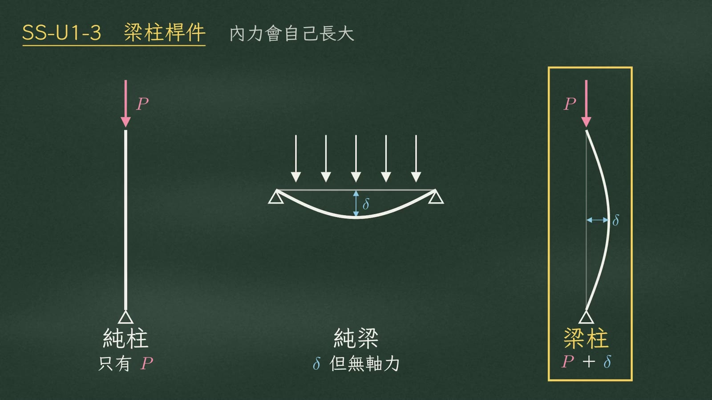
| 構材 | 軸力 \(P\) | 側向位移 \(\delta\) |
|---|---|---|
| 純柱 | 有 | 沒有外加彎矩 |
| 純梁 | 沒有 | 會變形 |
| 梁柱 | 有（受壓） | 有（側向位移） |
梁柱兩樣都有：一邊受壓、一邊側向位移，這就是它特別的地方。
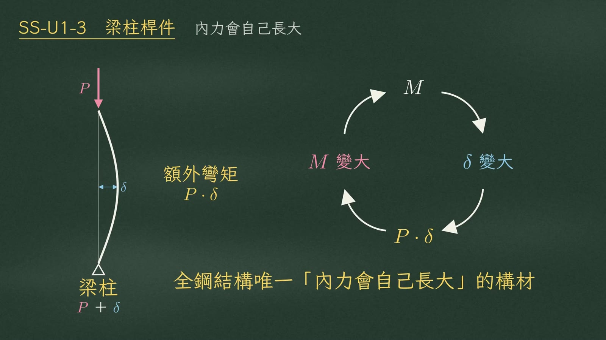
軸力乘上位移，產生額外彎矩 \(P\cdot\delta\)。額外彎矩讓構件彎得更多，變形又回頭餵出更多彎矩：
$$M \;\rightarrow\; \delta\uparrow \;\rightarrow\; P\cdot\delta \;\rightarrow\; M\uparrow$$
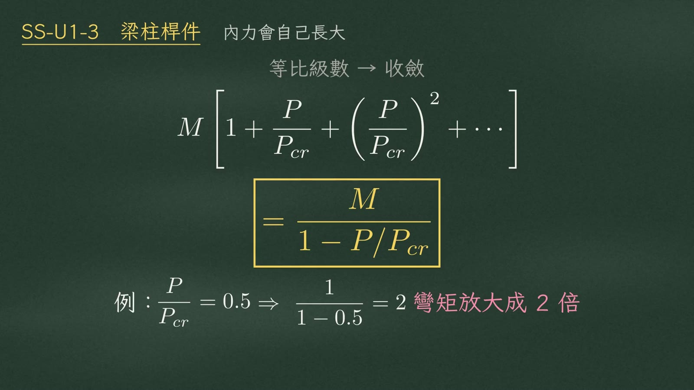
這個迴圈不會無限發散，它會收斂。把每一圈加起來是一個等比級數：
$$M\left[1+\frac{P}{P_{cr}}+\left(\frac{P}{P_{cr}}\right)^2+\cdots\right]=\frac{M}{1-P/P_{cr}}$$
例如軸力用到臨界載重的一半：
$$\frac{P}{P_{cr}}=0.5\;\Rightarrow\;\frac{1}{1-0.5}=2\quad\text{（彎矩放大成 2 倍）}$$
2兩欄解題法
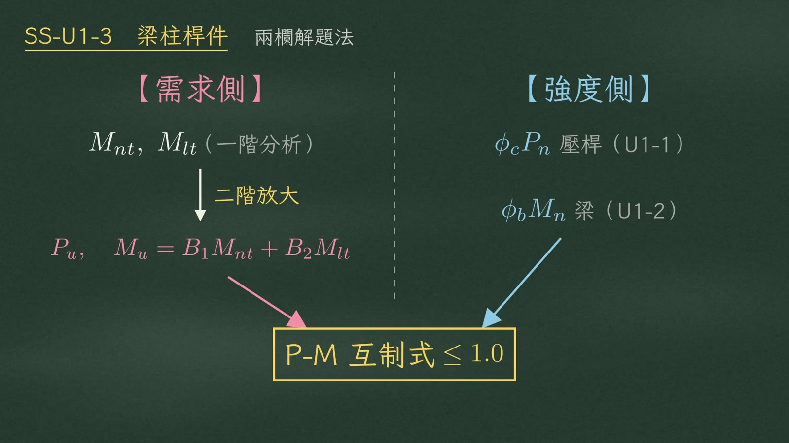
進考場拿到梁柱題，第一動作是在紙上畫兩欄。
| 欄 | 內容 |
|---|---|
| 左欄：需求側 | 從一階彎矩 \(M_{nt}\)、\(M_{lt}\) 出發 → 二階放大 → 得到 \(P_u\) 與 \(\color{#c2457a}M_u=B_1M_{nt}+B_2M_{lt}\) |
| 右欄：強度側 | 壓桿強度 \(\color{#2f7fae}\phi_cP_n\)（U1-1）、梁的強度 \(\color{#2f7fae}\phi_bM_n\)（U1-2）——全是前兩個單元的成果 |
兩欄最後在中間的 P-M 互制式 \(\le 1.0\) 會合，算出斷面能力被吃掉了幾成。
3左腿一 B1 構件效應
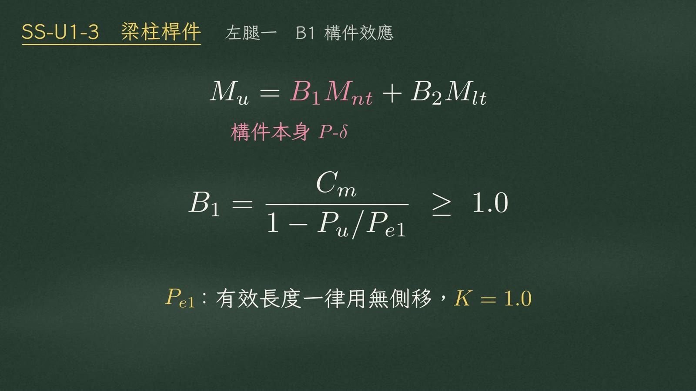
先走左腿。設計彎矩：
$$M_u=\color{#c2457a}B_1M_{nt}\color{black}+B_2M_{lt}$$
\(B_1\) 管的是構件本身的 \(P\text{-}\delta\) 效應：
$$B_1=\frac{C_m}{1-P_u/P_{e1}}\;\ge\;1.0$$
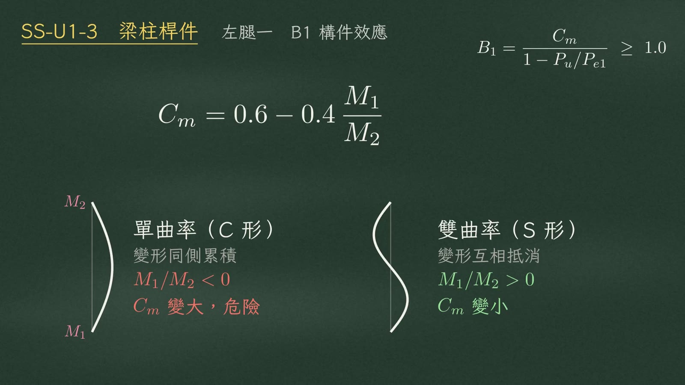
$$C_m=0.6-0.4\,\frac{M_1}{M_2}$$
符號是最常錯的地方：
| 彎曲形狀 | 變形 | \(M_1/M_2\) | \(C_m\) |
|---|---|---|---|
| 單曲率（C 形） | 往同一側累積 | 取負（\(<0\)） | 變大，危險 |
| 雙曲率（S 形） | 互相抵消 | 取正（\(>0\)） | 變小 |
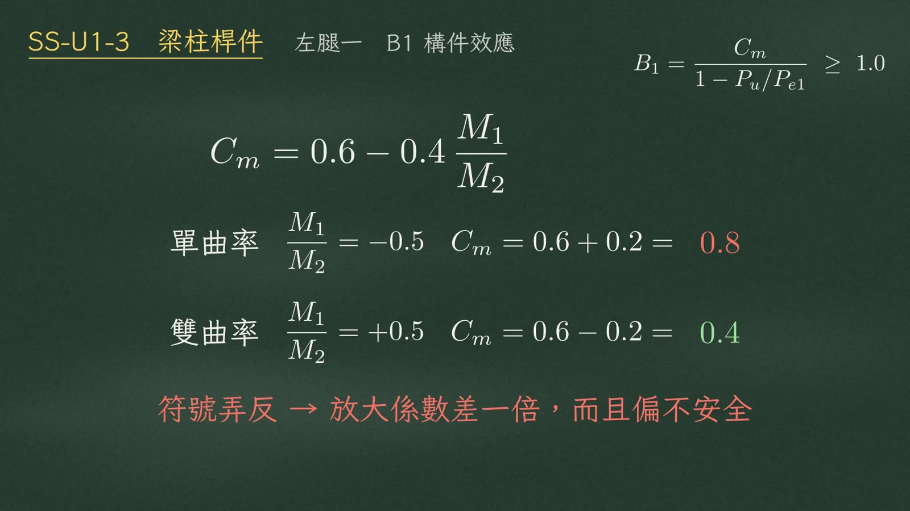
代個數字就有感覺。端彎矩比 0.5：
| 情況 | \(M_1/M_2\) | \(C_m\) |
|---|---|---|
| 單曲率 | \(-0.5\) | \(0.6+0.2=\color{#c0392b}0.8\) |
| 雙曲率 | \(+0.5\) | \(0.6-0.2=\color{#3c8a4e}0.4\) |
4左腿二 B2 樓層效應
\(B_2\) 管的是整層樓平移的 \(P\text{-}\Delta\) 效應：
$$B_2=\frac{1}{1-\sum P_u/\sum P_{e2}}\;\ge\;1.0$$
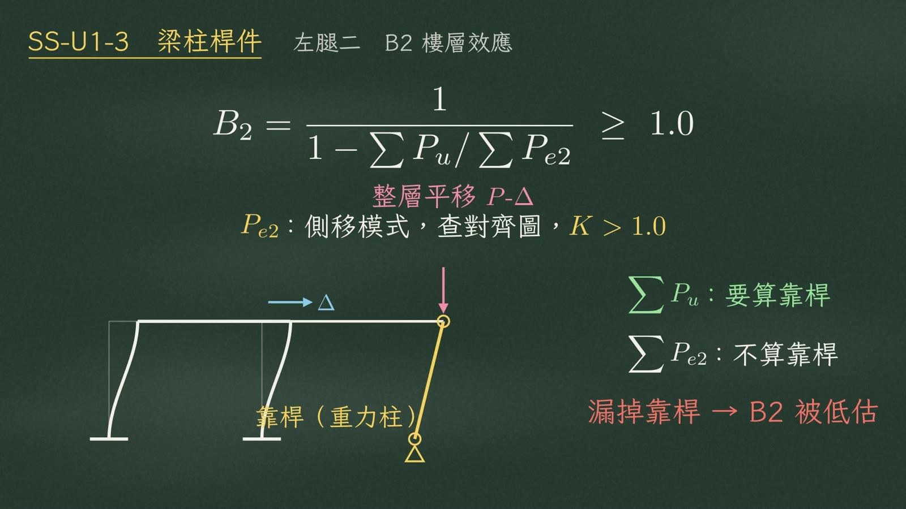
陷阱在 \(\sum\)：它指的是整個樓層。如果構架裡有兩端鉸接的靠桿，也就是重力柱：
| 項目 | 靠桿 | 理由 |
|---|---|---|
| \(\color{#3c8a4e}\sum P_u\)（分子） | 要算 | 它的重量要靠抗側系統扛著 |
| \(\sum P_{e2}\)（分母） | 不算 | 它不提供側向勁度 |
5右腿 強度側
再走右腿。強度側不教新觀念，全是前面單元的複用。
1. 軸壓強度 \(\phi_cP_n\)
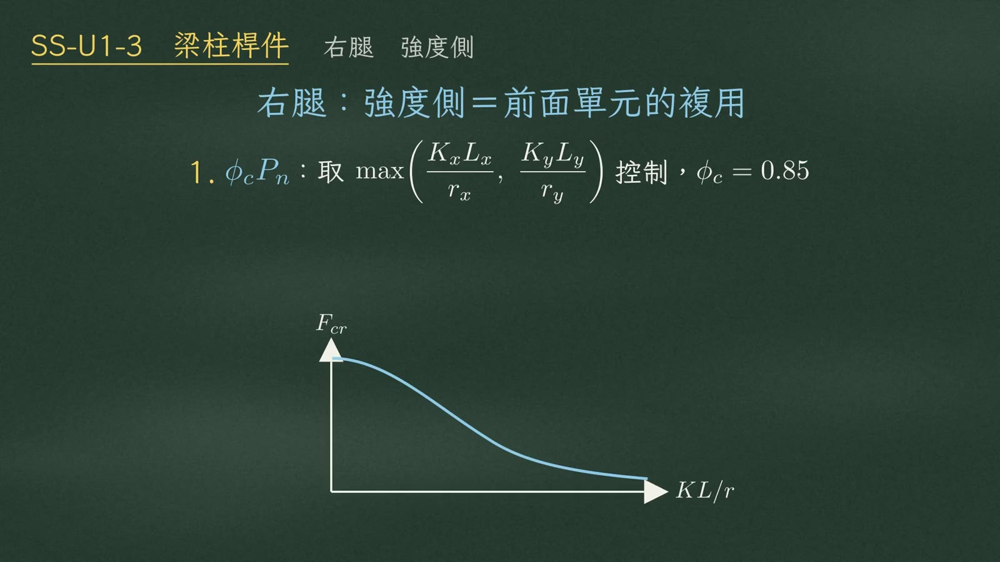
$$\text{取 }\max\left(\frac{K_xL_x}{r_x},\;\frac{K_yL_y}{r_y}\right)\text{ 控制},\qquad \phi_c=0.85$$
2. 強軸彎曲 \(\phi_bM_{nx}\)
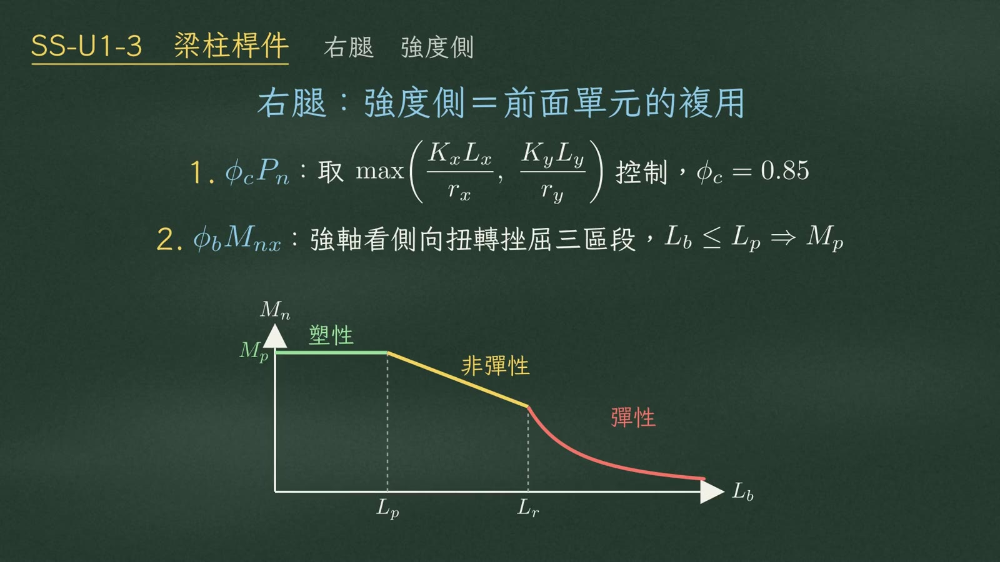
看側向扭轉挫屈的三個區段。無側撐長度 \(L_b\le L_p\)，就能用到塑性彎矩 \(M_p\)；超過之後進入非彈性段、彈性段，強度一路往下掉。
3. 弱軸彎曲 \(\phi_bM_{ny}\)
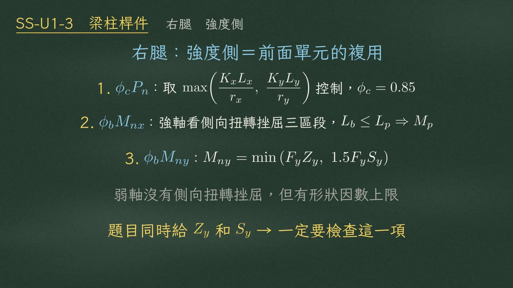
弱軸沒有側向扭轉挫屈，但有形狀因數上限：
$$M_{ny}=\min\left(F_yZ_y,\;1.5F_yS_y\right)$$
6會合 P-M 互制式
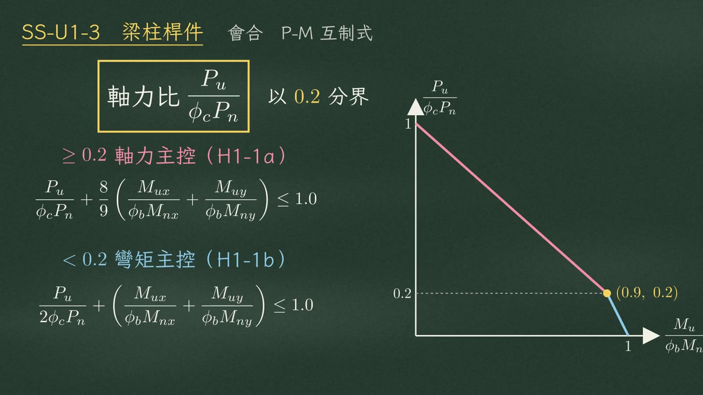
兩腿會合。先算軸力比 \(P_u/\phi_cP_n\)，用 0.2 當分界，決定走哪一條互制式。
| 軸力比 | 控制 | 互制式 |
|---|---|---|
| \(\ge 0.2\) | 軸力主控（H1-1a） | \(\displaystyle\frac{P_u}{\phi_cP_n}+\frac{8}{9}\left(\frac{M_{ux}}{\phi_bM_{nx}}+\frac{M_{uy}}{\phi_bM_{ny}}\right)\le 1.0\) |
| \(< 0.2\) | 彎矩主控（H1-1b） | \(\displaystyle\frac{P_u}{2\phi_cP_n}+\left(\frac{M_{ux}}{\phi_bM_{nx}}+\frac{M_{uy}}{\phi_bM_{ny}}\right)\le 1.0\) |
H1-1a：軸力比，加上 \(\tfrac{8}{9}\) 乘兩個彎矩比的和；H1-1b：軸力比先除以二，再加上兩個彎矩比。兩條線在 0.2 交會，畫出來就是這條折線的 P-M 互制曲線。
7ASD 對照
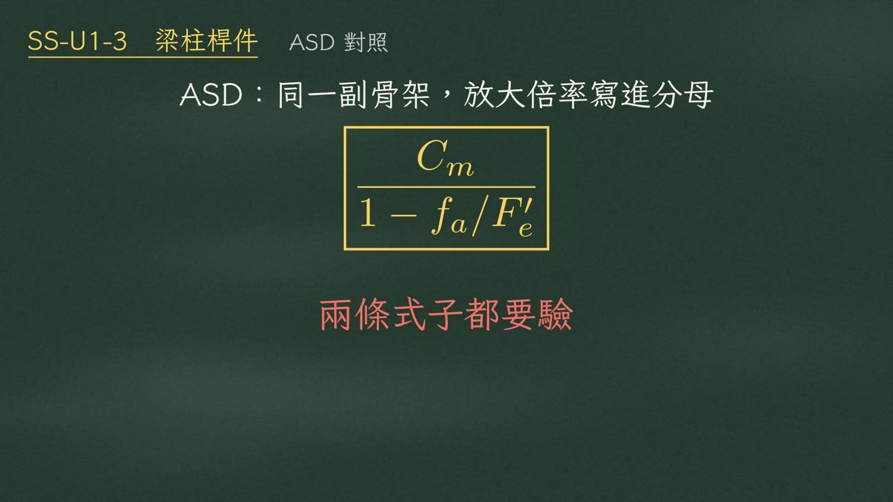
ASD 走的是同一副骨架，只是把放大倍率寫進分母：
$$\frac{C_m}{1-f_a/F'_e}$$
差別在於 ASD 必須同時驗兩條式子。
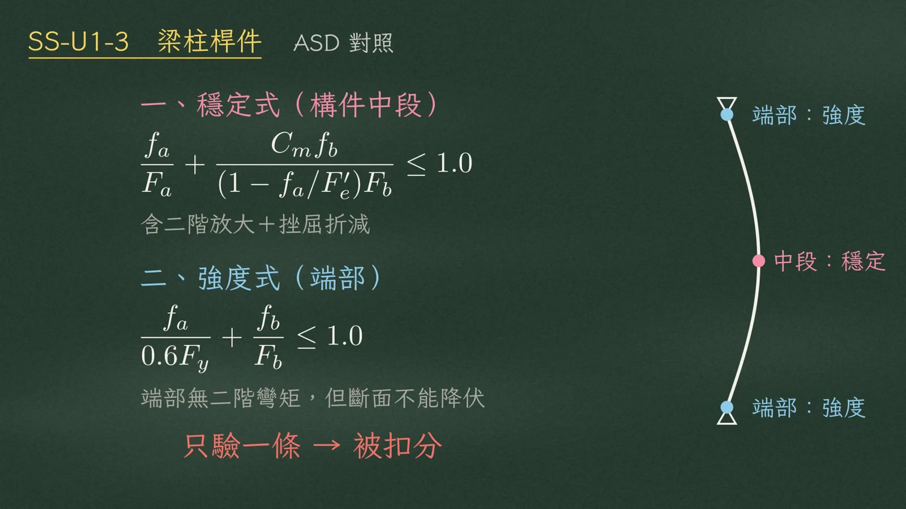
| 式子 | 檢查位置 | 內容 |
|---|---|---|
| 一、穩定式 | 構件中段 | \(\displaystyle\frac{f_a}{F_a}+\frac{C_mf_b}{(1-f_a/F'_e)F_b}\le 1.0\) 含二階放大＋挫屈折減 |
| 二、強度式 | 端部 | \(\displaystyle\frac{f_a}{0.6F_y}+\frac{f_b}{F_b}\le 1.0\) 端部沒有二階彎矩，但斷面不能降伏 |
8考場三步驟與總結
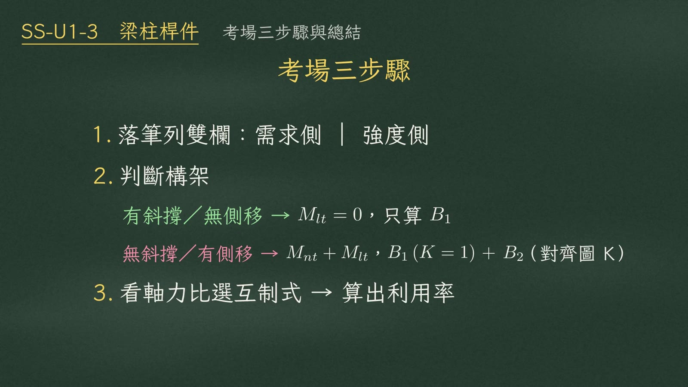
- 落筆列雙欄：需求側｜強度側。
- 判斷構架：
構架 處理 有斜撐／無側移 \(M_{lt}=0\)，只算 \(B_1\) 無斜撐／有側移 拆成 \(M_{nt}\) 和 \(M_{lt}\)；\(B_1\) 用 \(K=1\)，\(B_2\) 用對齊圖的側移 \(K\) - 看軸力比選互制式 → 算出利用率。
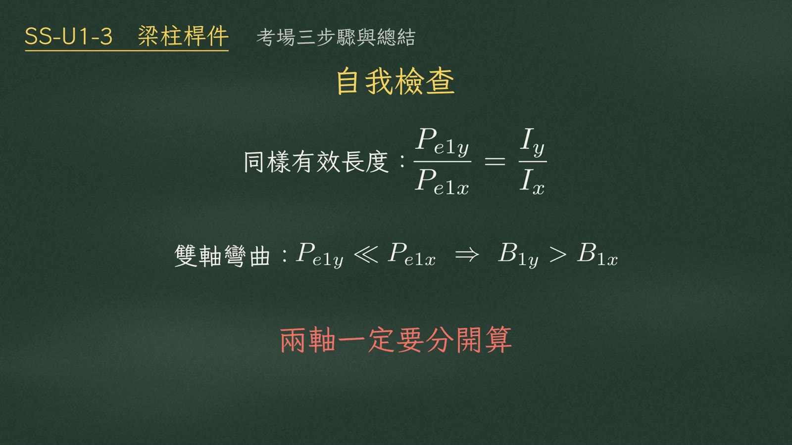
① 同樣的有效長度下：
$$\frac{P_{e1y}}{P_{e1x}}=\frac{I_y}{I_x}$$
② 雙軸彎曲時，弱軸的 \(P_{e1}\) 小很多：\(P_{e1y}\ll P_{e1x}\Rightarrow B_{1y}>B_{1x}\)。兩軸一定要分開算。
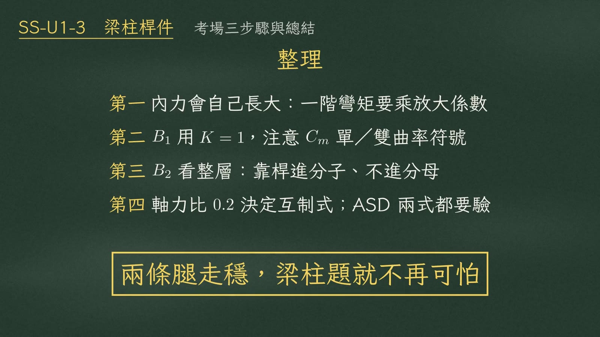
| # | 重點 |
|---|---|
| 第一 | 梁柱的內力會自己長大：一階彎矩要乘放大係數 |
| 第二 | \(B_1\) 用 \(K=1\)，注意 \(C_m\) 的單、雙曲率符號 |
| 第三 | \(B_2\) 看整層：靠桿進分子、不進分母 |
| 第四 | 軸力比 0.2 決定互制式；ASD 要驗兩條式子 |